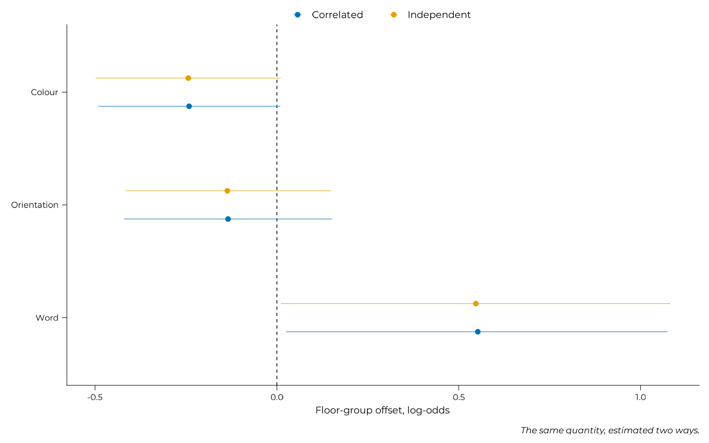
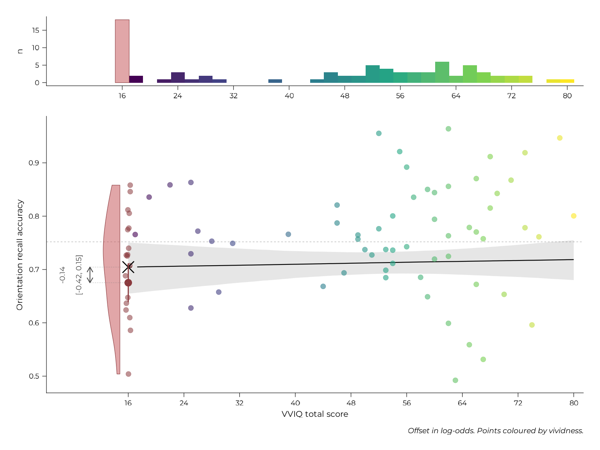
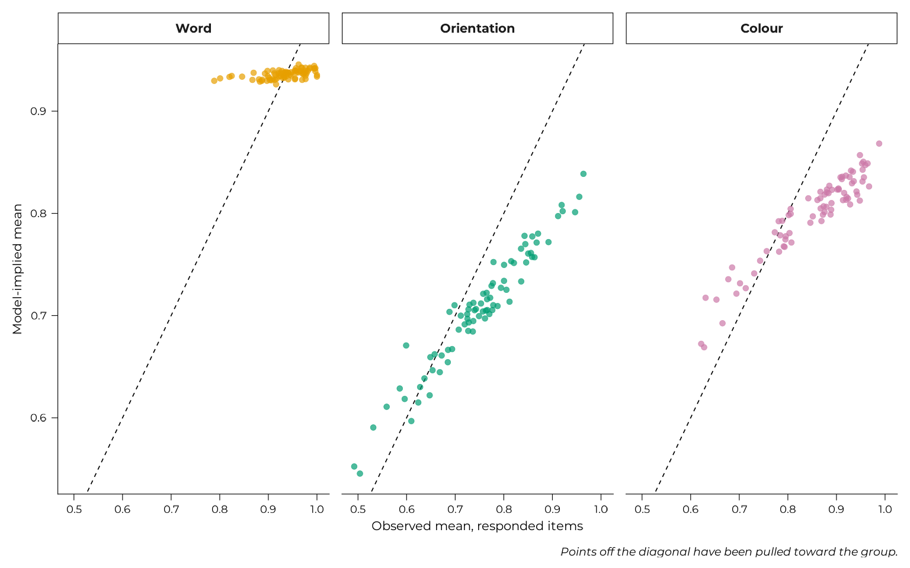

Performance: how well each feature is recalled
performance.RmdHow accurately is each feature recalled, and does imagery vividness predict it? Although interesting, this question was only secondary and complementary to the composition analysis: where effort goes is what the task was built to measure, and absolute accuracy cannot separate a deliberate choice from an inability.
This page is the same data read the other way. Like the composition it conditions on responded items, and whether that choice is innocent is tested on the joint model page.
v1 <- get_data("v1") |>
dplyr::filter(grepl("^expe_block", expe_phase))
participant_info <- v1 |>
dplyr::summarise(
vviq = dplyr::first(vviq_total_score),
imagery_group = dplyr::first(vviq_group_2),
# The proportion of parity probes ANSWERED, not a mean of
# `parity_*_acc`: that column scores an unanswered probe as 0, so a
# mean of it is a response rate wearing an accuracy name.
parity_rate = (sum(responded_parity_1) + sum(responded_parity_2)) /
(2 * dplyr::n()),
.by = id
)
model_data <- v1 |>
dplyr::filter(id %in% engaged_ids(v1)) |>
dplyr::left_join(participant_info, by = "id") |>
dplyr::filter(!is.na(vviq)) |>
dplyr::mutate(
complete_aphant = factor(
dplyr::if_else(vviq == 16, "floor", "above_floor"),
levels = c("above_floor", "floor")
),
score_color = squeeze_boundaries(score_color, n = sum(responded_color))
)
feature_labels <- c(word = "Word", angle = "Orientation", color = "Colour")This page uses the 79 participants who clear the engagement thresholds of the task validity page and have a vividness score. The thresholds are there to stop imprecise participant means being treated as measurements.
1. Three features, three response families
Nothing about these scores makes a single response family appropriate, and the scoring page shows why: on responded items, word piles at 1, orientation has no boundary mass at all, and colour has a trace of mass at 1 that is more about pixel resolution than behaviour.
performance_formula()
#> score_word | subset(responded_word) ~ vviq + complete_aphant + parity_rate + (1 | p | id)
#> score_angle | subset(responded_angle) ~ vviq + complete_aphant + parity_rate + (1 | p | id)
#> score_color | subset(responded_color) ~ vviq + complete_aphant + parity_rate + (1 | p | id)Every accuracy model on this site carries parity_rate:
it is the dual-task load a participant actually incurred, which task engagement §5 shows is a strategy
variable in its own right rather than a control for something it does
not predict. The joint model puts it on
its accuracy arms and not on its gates, for the same reason, so the two
pages estimate the same quantity.
Word takes a zero-one-inflated Beta family because its ceiling is a
real point mass, orientation a plain Beta family, and colour a Beta
family after a Smithson-Verkuilen squeeze. subset()
restricts each arm to the items that feature was reported on, which is
what lets one row carry three responses with independent
non-response.
2. Modelling the features separately?
Start with what looks obvious: fit each feature on its own.
# Built from the same exported `response_priors()` the script calls, rather
# than left to brms' defaults. `resp` is omitted for a univariate model,
# where coefficients belong to no response.
univariate_priors <- function(rhs) {
terms <- c("vviq", "complete_aphant", "imagery_group", "parity_rate")
response_priors(NULL, terms = terms[vapply(terms, grepl, logical(1), rhs)])
}
fit_feature <- function(feature, family, file) {
rhs <- "vviq + complete_aphant + parity_rate + (1 | id)"
fit_brms_model(
formula = brms::bf(
stats::as.formula(paste0(
"score_", feature, " | subset(responded_", feature, ") ~ ", rhs)),
family = family
),
data = model_data,
prior = univariate_priors(rhs),
file = system.file("models", file, package = pkg),
file_refit = refit
)
}
independent <- list(
Word = fit_feature("word", brms::zero_one_inflated_beta(), "perf-a-word.rds"),
Orientation = fit_feature("angle", brms::Beta(), "perf-a-angle.rds"),
Colour = fit_feature("color", brms::Beta(), "perf-a-color.rds")
)The task makes that misleading by construction. Points are traded across features within a trial, so a participant who does well on one has spent effort they could not spend elsewhere. Three independent models cannot represent that, and more importantly they cannot measure it.
# lkj(2) mildly favours the identity, so the cross-feature correlations
# have to be earned from the data. It is passed here
# rather than left to brms' default lkj(1), because section 3 reads the
# posteriors against this prior and a different one would make that read
# wrong.
c_prime_priors <- c(
do.call(c, lapply(
c("scoreword", "scoreangle", "scorecolor"),
response_priors, terms = c("vviq", "complete_aphant", "parity_rate")
)),
brms::prior("lkj(2)", class = "cor")
)
correlated <- fit_brms_model(
formula = performance_formula(),
data = model_data,
prior = c_prime_priors,
file = system.file("models", "perf-c-prime.rds", package = pkg),
file_refit = refit
)The correlated model adds (1 | p | id), which gives the
three features a shared participant-level correlation matrix. That is
the whole difference, and it buys two things: a dependency structure the
design implies, and three named correlations that are themselves
quantities of interest.
offsets <- dplyr::bind_rows(
purrr::imap(independent, \(model, feature) {
values <- brms::fixef(model)["complete_aphantfloor", ]
tibble::tibble(feature = feature, model = "Independent",
estimate = values[["Estimate"]],
lower = values[["Q2.5"]], upper = values[["Q97.5"]])
}) |> purrr::list_rbind(),
purrr::map(names(feature_labels), \(feature) {
row <- paste0("score", feature, "_complete_aphantfloor")
values <- brms::fixef(correlated)[row, ]
tibble::tibble(feature = feature_labels[[feature]],
model = "Correlated",
estimate = values[["Estimate"]],
lower = values[["Q2.5"]], upper = values[["Q97.5"]])
}) |> purrr::list_rbind()
) |>
dplyr::mutate(feature = factor(feature, levels = unname(feature_labels)))
ggplot(offsets, aes(x = estimate, y = feature, colour = model)) +
geom_vline(xintercept = 0, linetype = "dashed", linewidth = 0.3) +
geom_pointrange(aes(xmin = lower, xmax = upper),
position = position_dodge(width = 0.5), size = 0.4) +
scale_colour_manual(values = unname(palette.colors()[c(6, 2)]), name = NULL) +
labs(x = "Floor-group offset, log-odds", y = NULL,
caption = "The same quantity, estimated two ways.")
The coefficients barely move. On these data, respecting the dependency structure changes the floor-group estimates very little. What it adds is not a correction but a measurement: the correlations between features.
3. What the correlations say
posterior_correlations(brms::as_draws_df(correlated), lkj = 2, dimension = 3) |>
dplyr::mutate(
pair = paste(feature_labels[sub("^score", "", response_a)], "and",
feature_labels[sub("^score", "", response_b)])
) |>
dplyr::select(pair, median, lower, upper, pd, moved) |>
knitr::kable(digits = 3, caption = "Participant-level correlations between features")| pair | median | lower | upper | pd | moved |
|---|---|---|---|---|---|
| Word and Orientation | 0.253 | -0.153 | 0.628 | 0.891 | TRUE |
| Word and Colour | -0.163 | -0.558 | 0.248 | 0.782 | TRUE |
| Orientation and Colour | 0.588 | 0.347 | 0.770 | 1.000 | TRUE |
Orientation and colour correlate positively, and clearly. Between people, doing well on one non-verbal feature goes with doing well on the other: shared ability, not a trade-off.
The trade-off the task imposes is a within-trial constraint, not a between-person one. The joint model reaches the same conclusion with the gates in place.
4. How imagery enters
Vividness is not a smoothly continuous predictor here, so rather than assume a form, several were compared on orientation, which is the best-measured feature.
form_models <- list(
"Intercept only" = fit_brms_model(
formula = brms::bf(
score_angle | subset(responded_angle) ~ parity_rate + (1 | id),
family = brms::Beta()),
data = model_data,
prior = univariate_priors("parity_rate + (1 | id)"),
file = system.file("models", "perf-form-null.rds", package = pkg),
file_refit = refit),
"Two-group split" = fit_brms_model(
formula = brms::bf(
score_angle | subset(responded_angle) ~
imagery_group + parity_rate + (1 | id),
family = brms::Beta()),
data = model_data,
prior = univariate_priors("imagery_group + parity_rate + (1 | id)"),
file = system.file("models", "perf-form-group.rds", package = pkg),
file_refit = refit),
"Linear vividness" = fit_brms_model(
formula = brms::bf(
score_angle | subset(responded_angle) ~ vviq + parity_rate + (1 | id),
family = brms::Beta()),
data = model_data,
prior = univariate_priors("vviq + parity_rate + (1 | id)"),
file = system.file("models", "perf-form-linear.rds", package = pkg),
file_refit = refit),
"Floor-group additive" = independent$Orientation
)
form_models <- lapply(form_models, brms::add_criterion, "loo")
comparison <- loo::loo_compare(lapply(form_models, \(fit) fit$criteria$loo))
if (!"model" %in% names(comparison)) {
comparison <- tibble::rownames_to_column(as.data.frame(comparison), "model")
}
comparison |>
dplyr::select(model, elpd_diff, se_diff) |>
knitr::kable(digits = 2, caption = "Functional form, compared on orientation")| model | elpd_diff | se_diff |
|---|---|---|
| Linear vividness | 0.00 | 0.00 |
| Floor-group additive | -0.17 | 0.42 |
| Two-group split | -0.40 | 0.27 |
| Intercept only | -0.43 | 0.73 |
The differences sit inside their standard errors, so the data do not separate these forms. That was predicted in advance, and it is reported rather than converted into a claim: at this sample size, with this outcome, a comparison of four models was never going to be decisive.
The floor-group form remains primary because it was declared so before fitting. Its justification is structural: participants at the scale floor have no vividness variance among themselves, so a slope cannot be estimated for them, while an offset can.
orientation <- independent$Orientation
grid <- tibble::tibble(
vviq = seq(16, 80, length.out = 200),
complete_aphant = factor("above_floor", levels = c("above_floor", "floor")),
# held at the sample median: the model carries parity_rate, so a grid
# without it cannot be predicted from at all
parity_rate = stats::median(model_data$parity_rate),
responded_angle = TRUE
)
above_floor <- brms::posterior_epred(orientation, newdata = grid,
re_formula = NA)
floor_row <- grid[1, ]
floor_row$complete_aphant <- factor("floor",
levels = c("above_floor", "floor"))
floor_draws <- as.vector(
brms::posterior_epred(orientation, newdata = floor_row, re_formula = NA))
observed <- model_data |>
dplyr::filter(responded_angle) |>
dplyr::summarise(y = mean(score_angle), vviq = dplyr::first(vviq), .by = id)
effect <- brms::fixef(orientation)["complete_aphantfloor", ]
main_panel <- plot_floor_group(
observed = dplyr::transmute(dplyr::filter(observed, vviq > 16),
x = vviq, y = y),
fitted = tibble::tibble(
x = grid$vviq,
estimate = apply(above_floor, 2, stats::median),
lower = apply(above_floor, 2, stats::quantile, 0.025),
upper = apply(above_floor, 2, stats::quantile, 0.975)
),
floor_draws = floor_draws,
floor_observed = dplyr::filter(observed, vviq == 16)$y,
effect_label = sprintf("%.2f\n[%.2f, %.2f]", effect[["Estimate"]],
effect[["Q2.5"]], effect[["Q97.5"]]),
y_lab = "Orientation recall accuracy",
caption = "Offset in log-odds. Points coloured by vividness.",
base_size = 16, point_size = 2.2, left_expansion = 0.09,
arrow_nudge = -5.5
)
plot_vviq_histogram(observed$vviq, base_size = 16, left_expansion = 0.15) /
main_panel + patchwork::plot_layout(heights = c(1, 4))
The histogram is the argument for the model: vividness is a spike at the floor plus an irregular remainder, not a continuum. In the panel the arrow has almost nothing to span, which is the result.
5. Where the floor group does and does not differ
purrr::map(names(feature_labels), \(feature) {
row <- paste0("score", feature, "_complete_aphantfloor")
values <- brms::fixef(correlated)[row, ]
tibble::tibble(feature = feature_labels[[feature]],
estimate = values[["Estimate"]],
lower = values[["Q2.5"]], upper = values[["Q97.5"]])
}) |>
purrr::list_rbind() |>
knitr::kable(digits = 3, caption = "Floor-group offsets, log-odds")| feature | estimate | lower | upper |
|---|---|---|---|
| Word | 0.553 | 0.026 | 1.075 |
| Orientation | -0.134 | -0.420 | 0.151 |
| Colour | -0.241 | -0.491 | 0.009 |
Word is positive and excludes zero, colour is negative and touches it, orientation is centred near nothing.
Word’s row must not be read as an individual-differences result. Its split-half reliability is 0.45, and the task validity page sets out why: single-word recall at this exposure is too easy to discriminate between people. A group contrast is a different estimand from an individual-differences claim, and measurement error widens intervals rather than biasing estimates, so the offset is not wrong. But this page is not where that claim should be made, and the composition page reaches the same conclusion through a quantity that does clear its reliability gate.
6. Partial pooling
A multilevel model does not take each participant’s mean at face value: it pulls imprecise estimates toward the group. On one feature, this pull is dramatic:
observed_means <- compose_features(model_data, id) |>
dplyr::select(id, tidyselect::starts_with("mean_")) |>
tidyr::pivot_longer(tidyselect::starts_with("mean_"), names_to = "feature",
values_to = "observed", names_prefix = "mean_")
fitted_means <- purrr::map(names(feature_labels), \(feature) {
responded <- model_data[[paste0("responded_", feature)]]
epred <- brms::posterior_epred(correlated, resp = paste0("score", feature))
tibble::tibble(
id = model_data$id[responded],
feature = feature,
modelled = apply(epred, 2, mean)
) |>
dplyr::summarise(modelled = mean(modelled), .by = c(id, feature))
}) |>
purrr::list_rbind()
dplyr::inner_join(observed_means, fitted_means, by = c("id", "feature")) |>
dplyr::mutate(feature = factor(feature_labels[feature],
levels = unname(feature_labels))) |>
ggplot(aes(x = observed, y = modelled, colour = feature)) +
geom_abline(slope = 1, intercept = 0, linetype = "dashed", linewidth = 0.3) +
geom_point(size = 1.6, alpha = 0.7, show.legend = FALSE) +
facet_wrap(~feature) +
scale_discrete_feature(aesthetics = "colour") +
labs(x = "Observed mean, responded items", y = "Model-implied mean",
caption = "Points off the diagonal have been pulled toward the group.")
Orientation and colour track the diagonal with modest shrinkage, which is what partial pooling normally looks like.
Word does not track it at all. Observed means run from about 0.78 to 1.00, and the model returns essentially the same estimate for everybody. That is not a bug: it is the model saying it cannot distinguish these participants, and it is the same fact as word’s split-half reliability of 0.45 seen from another angle. A figure of this shape is what an unusable individual-differences measure looks like, and it is the clearest reason on this page not to read word’s coefficient as one.
Continuing through the Extended Online Report: this page follows composition. To keep reading in order, continue to the joint model next. Or see model diagnostics and implementation notes for the technical detail behind these models.
#> ─ Session info ───────────────────────────────────────────────────────────────
#> setting value
#> version R version 4.6.1 (2026-06-24)
#> os Ubuntu 22.04.5 LTS
#> system x86_64, linux-gnu
#> ui X11
#> language en
#> collate C.UTF-8
#> ctype C.UTF-8
#> tz UTC
#> date 2026-08-31
#> pandoc 3.8.3 @ /opt/hostedtoolcache/pandoc/3.8.3/x64/ (via rmarkdown)
#> quarto NA
#>
#> ─ Packages ───────────────────────────────────────────────────────────────────
#> ! package * version date (UTC) lib source
#> abind 1.4-8 2024-09-12 [2] CRAN (R 4.6.1)
#> aphantasiaWMStrats * 0.1 2026-08-31 [1] local
#> backports 1.5.1 2026-04-03 [2] CRAN (R 4.6.1)
#> bayesplot 1.16.0 2026-08-25 [2] CRAN (R 4.6.1)
#> bridgesampling 1.2-1 2025-11-19 [2] CRAN (R 4.6.1)
#> brms 2.23.0 2025-09-09 [2] CRAN (R 4.6.1)
#> Brobdingnag 1.2-9 2022-10-19 [2] CRAN (R 4.6.1)
#> bslib 0.12.0 2026-08-04 [2] CRAN (R 4.6.1)
#> cachem 1.1.0 2024-05-16 [2] CRAN (R 4.6.1)
#> checkmate 2.3.4 2026-02-03 [2] CRAN (R 4.6.1)
#> cli 3.6.6 2026-04-09 [2] CRAN (R 4.6.1)
#> coda 0.19-4.1 2024-01-31 [2] CRAN (R 4.6.1)
#> P codetools 0.2-20 2024-03-31 [?] CRAN (R 4.6.1)
#> crayon 1.5.3 2024-06-20 [2] CRAN (R 4.6.1)
#> curl 8.0.0 2026-08-25 [2] CRAN (R 4.6.1)
#> desc 1.4.3 2023-12-10 [2] CRAN (R 4.6.1)
#> digest 0.6.39 2025-11-19 [2] CRAN (R 4.6.1)
#> distributional 0.8.1 2026-06-27 [2] CRAN (R 4.6.1)
#> dplyr 1.2.1 2026-04-03 [2] CRAN (R 4.6.1)
#> emmeans 2.0.4 2026-07-15 [2] CRAN (R 4.6.1)
#> estimability 2.0.0 2026-06-26 [2] CRAN (R 4.6.1)
#> evaluate 1.0.5 2025-08-27 [2] CRAN (R 4.6.1)
#> farver 2.1.2 2024-05-13 [2] CRAN (R 4.6.1)
#> fastmap 1.2.0 2024-05-15 [2] CRAN (R 4.6.1)
#> fs 2.1.0 2026-04-18 [2] CRAN (R 4.6.1)
#> generics 0.1.4 2025-05-09 [2] CRAN (R 4.6.1)
#> ggplot2 * 4.0.3 2026-04-22 [2] CRAN (R 4.6.1)
#> glue 1.8.1 2026-04-17 [2] CRAN (R 4.6.1)
#> gridExtra 2.3.1 2026-06-25 [2] CRAN (R 4.6.1)
#> gtable 0.3.6 2024-10-25 [2] CRAN (R 4.6.1)
#> htmltools 0.5.9 2025-12-04 [2] CRAN (R 4.6.1)
#> inline 0.3.21 2025-01-09 [2] CRAN (R 4.6.1)
#> jquerylib 0.1.4 2021-04-26 [2] CRAN (R 4.6.1)
#> jsonlite 2.0.0 2025-03-27 [2] CRAN (R 4.6.1)
#> knitr 1.51 2025-12-20 [2] CRAN (R 4.6.1)
#> labeling 0.4.3 2023-08-29 [2] CRAN (R 4.6.1)
#> P lattice 0.22-9 2026-02-09 [?] CRAN (R 4.6.1)
#> lifecycle 1.0.5 2026-01-08 [2] CRAN (R 4.6.1)
#> loo 2.10.1 2026-07-24 [2] CRAN (R 4.6.1)
#> magrittr 2.0.5 2026-04-04 [2] CRAN (R 4.6.1)
#> P Matrix 1.7-5 2026-03-21 [?] CRAN (R 4.6.1)
#> matrixStats 1.5.0 2025-01-07 [2] CRAN (R 4.6.1)
#> mvtnorm 1.4-2 2026-07-12 [2] CRAN (R 4.6.1)
#> P nlme 3.1-169 2026-03-27 [?] CRAN (R 4.6.1)
#> otel 0.2.0 2025-08-29 [2] CRAN (R 4.6.1)
#> patchwork * 1.3.2 2025-08-25 [2] CRAN (R 4.6.1)
#> pillar 1.11.1 2025-09-17 [2] CRAN (R 4.6.1)
#> pkgbuild 1.4.8 2025-05-26 [2] CRAN (R 4.6.1)
#> pkgconfig 2.0.3 2019-09-22 [2] CRAN (R 4.6.1)
#> pkgdown 2.2.1 2026-07-07 [2] any (@2.2.1)
#> posterior 1.7.0 2026-04-01 [2] CRAN (R 4.6.1)
#> purrr 1.2.2 2026-04-10 [2] CRAN (R 4.6.1)
#> QuickJSR 1.11.0 2026-08-21 [2] CRAN (R 4.6.1)
#> R6 2.6.1 2025-02-15 [2] CRAN (R 4.6.1)
#> ragg 1.5.2 2026-03-23 [2] CRAN (R 4.6.1)
#> RColorBrewer 1.1-3 2022-04-03 [2] CRAN (R 4.6.1)
#> Rcpp 1.1.2 2026-07-05 [2] CRAN (R 4.6.1)
#> RcppParallel 6.2.1 2026-08-27 [2] CRAN (R 4.6.1)
#> renv 1.0.7 2024-04-11 [2] RSPM (R 4.6.1)
#> rlang 1.3.0 2026-07-05 [2] CRAN (R 4.6.1)
#> rmarkdown 2.31 2026-03-26 [2] CRAN (R 4.6.1)
#> rstan 2.32.7 2025-03-10 [2] CRAN (R 4.6.1)
#> rstantools 2.7.1 2026-08-29 [2] CRAN (R 4.6.1)
#> S7 0.2.2 2026-04-22 [2] CRAN (R 4.6.1)
#> sass 0.4.10 2025-04-11 [2] CRAN (R 4.6.1)
#> scales 1.4.0 2025-04-24 [2] CRAN (R 4.6.1)
#> sessioninfo 1.2.4 2026-06-04 [2] CRAN (R 4.6.1)
#> showtext 0.9-8 2026-03-21 [2] CRAN (R 4.6.1)
#> showtextdb 3.0 2020-06-04 [2] CRAN (R 4.6.1)
#> StanHeaders 2.32.10 2024-07-15 [2] CRAN (R 4.6.1)
#> stringi 1.8.9 2026-08-04 [2] CRAN (R 4.6.1)
#> stringr 1.6.0 2025-11-04 [2] CRAN (R 4.6.1)
#> sysfonts 0.8.9 2024-03-02 [2] CRAN (R 4.6.1)
#> systemfonts 1.3.2 2026-03-05 [2] CRAN (R 4.6.1)
#> tensorA 0.36.2.1 2023-12-13 [2] CRAN (R 4.6.1)
#> textshaping 1.0.5 2026-03-06 [2] CRAN (R 4.6.1)
#> tibble 3.3.1 2026-01-11 [2] CRAN (R 4.6.1)
#> tidyr 1.3.2 2025-12-19 [2] CRAN (R 4.6.1)
#> tidyselect 1.2.1 2024-03-11 [2] CRAN (R 4.6.1)
#> vctrs 0.7.3 2026-04-11 [2] CRAN (R 4.6.1)
#> viridisLite 0.4.3 2026-02-04 [2] CRAN (R 4.6.1)
#> withr 3.0.3 2026-06-19 [2] CRAN (R 4.6.1)
#> xfun 0.60 2026-07-09 [2] CRAN (R 4.6.1)
#> xtable 1.8-8 2026-02-22 [2] CRAN (R 4.6.1)
#> yaml 2.3.12 2025-12-10 [2] CRAN (R 4.6.1)
#>
#> [1] /tmp/RtmpTZJzeG/temp_libpath83f725132ca2
#> [2] /home/runner/.cache/R/renv/library/aphantasiaWMStrats-f7ce8556/linux-ubuntu-jammy/R-4.6/x86_64-pc-linux-gnu
#> [3] /home/runner/.cache/R/renv/sandbox/linux-ubuntu-jammy/R-4.6/x86_64-pc-linux-gnu/e7c0fad7
#>
#> * ── Packages attached to the search path.
#> P ── Loaded and on-disk path mismatch.
#>
#> ──────────────────────────────────────────────────────────────────────────────